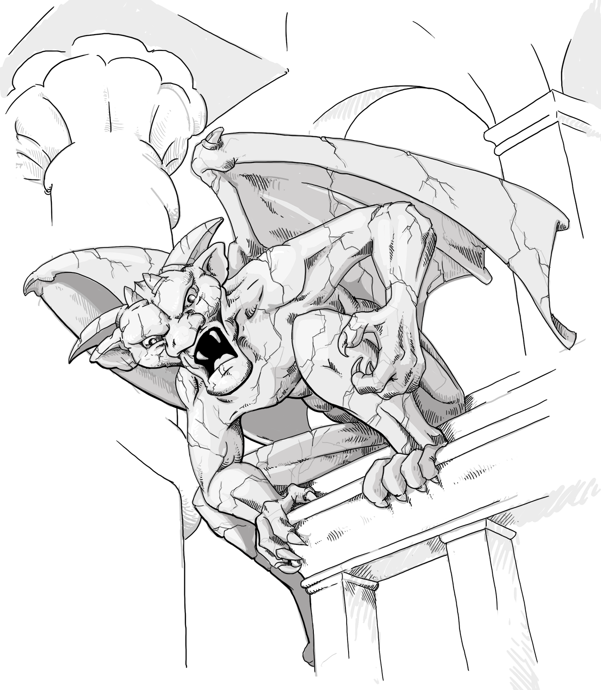

Complete Monster
by
Radaghast Kary
← Gargantuan Zombie
↑Index↑
Garroter Crab →

Illustration by Mariana Ruiz Villarreal,
Public Domain
Gargoyle
Members:
Four-armed Gargoyle
Giant Four-Armed Gargoyle
Green Guardian Gargoyle
General
General links
Gargoyle on Wikipedia
5e
CE
D&D 5 facts
Size: Medium
Type:
Elemental
CR: 2
D&D 5 sources
Monster Manual
, p 140
D&D 5 links
Gargoyle in 5e d20 SRD
Gargoyle on AideD&D
3e
CE
D&D 3.0 facts
Abilities: Str 11, Dex 14, Con 18, Int 6, Wis 11, Cha 7
AC: 16 (+2 Dex, +4 natural)
Advancement: 5-6 HD (Medium-size); 7-12 HD (Large)
Attacks: 2 claws +6 melee, bite +4 melee, gore +4 melee
CR: 4
Damage: Claw 1d4, bite 1d6, gore 1d6
HD: 4d10+16 (38)
Initiative: +2 (Dex)
Organization: Solitary, pair, or wing (5-16)
Qualities: Damage reduction 15/+1, freeze
Reach: 5 ft. by 5 ft./5 ft.
Saves: Fort +8, Ref +6, Will +1
Size: Medium
Skills: *Gargoyles receive a +8 racial bonus to Hide checks when concealed against a background of worked stone.
Speed: 45 ft., fly 75 ft. (average)
Tag: Earth
Terrain: Any land, aquatic, and underground
Treasure: Standard
Type:
Magical Beast
D&D 3.0 links
Gargoyle in 3.0 d20 SRD
D&D 3.5 links
Gargoyle in 3.5e d20 SRD
Pathfinder 2 facts
Level: 4
Pathfinder 2 sources
Bestiary
Pathfinder 2 links
Gargoyle Monster in Pathfinder 2 SRD
0e
OD&D facts
Number Appearing: 2-20
AC: 5
Move: 9/15
HD: 4
Chance in Lair: 25%
Treasure: Type C
OD&D sources
Monsters & Treasure
, p 3
C
S&W
facts
AC: [14]
Attacks: 2 claws (1d3), 1 bite (1d4), 1 horn (1d6)
HD: 4+4
HDE: : 6
Move: 3 (5 when flying)
Special: Flight, darkvision
XP: 400
S&W
sources
The Blue Book of Dangers and Dweomers
, p 85
{kind=link}